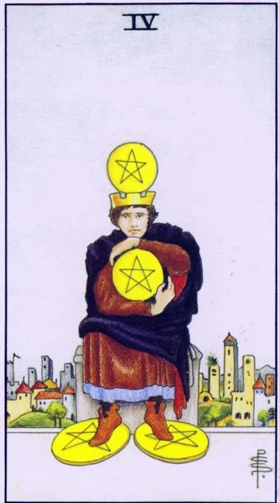

Minor Arcana · Pentacles
IVFour of Pentacles
Hold and keep: Stability is achieved, but the grip is already turning into fear of losing, and life is shrinking to the size of a fortress.
Archetype and core meaning
A citizen sitting outside the city walls, clutching coins: one pressed to his chest, another crowning his head, another clamped under his foot, he has achieved much — and now his whole world is reduced to guarding what he has achieved. The four pentacles speak in terms of image: it is legal to protect what he has gained, but when security becomes meaning, a person puts himself outside the fortress wall of life.
The card has a bright side, and it's not a sham: saving, saving, standing up for yourself is a maturity that many people don't have. The problem starts where control replaces trust. The sun in Capricorn illuminates the stone safe from the inside: there's wealth, there's not enough light in it, the card suggests checking whether you own assets or anxiety, disguised as assets.
Daily life
Being in the sign of reasonable savings: accounting for expenses, saving some income, buying reliable instead of fashionable. A card is good for consolidation - pooling accounts, putting things in order, getting insurance for housing. One caveat: if saving already forbids joy, it's not order, it's a cage with a beautiful lock.
Work and career
Professionally, the position of the fortress: stable place, proven strategy, abandoning adventure. You strengthen what you have: customer base, position, reputation. The shadow option is information greed, where the specialist hides knowledge and authority, fearing to become unnecessary. The value of the expert grows from exchange, not from secrecy.
Relationships
You're careful in your feelings, the heart opens in portions and is controlled. It protects against pain, but it keeps intimacy at arm's length. In a stable pair, the card is faithful and budget-conscious; the flip side is jealous accounting of who invested more. Trustworthiness is beautiful until it turns into possession.
Health
The body accumulates the unexpressed: clamps in the shoulders, clenched jaws, held breath — this is the anatomy of control. Energy-saving regimen is justified when exhausted, but constant tension of security wears out the vessels and back. The body needs a practice of letting go: massage, stretching, breathing exercises, literally teaching the muscles to stretch.
Spiritual meaning
The sun in Capricorn is a light locked in a stone vault: the lesson of the card is that the treasure without a turn dies. In protective magic, the four are used to talismans of property and print on the purse, but the old masters added a condition: always give some, otherwise the seal will turn against the owner. Circulation is the law of the element of the Earth.
The grip weakens: either the hand finally opens to exchange and renewal, or the acquired leaks through the fingers.
Archetype and core meaning
The fingers broke, depending on what was in the fist. The inverted four describe two paths out of the petrified grip. The first is liberation: one lets go of old things, shares, spends on life, and it turns out that the world is not collapsing. The second is the collapse: control gave a crack, accumulated avalanche, because the dam was only held on fear.
There's a third reading, the extreme of generosity, where you give out over-the-counter, buying favor, because you have the same hunger inside, just turned outward. The scenarios are simple: liberation fills, compulsive giving devastates. The card asks you to distinguish generosity from leakage, just by the feeling after the act.
Daily life
Your budget is shattered, spending is ahead of schedule, a big purchase is a hole, your savings are melting away, or you can just sell, give it away, get your cabinets out of the trash, and that's a relief. Check where the money goes: if it's anesthesia for anxiety, the effect is always temporary.
Work and career
Work stability has been shattered: restructuring, ownership change, responsibilities dilution -- the indestructible has been a set of agreements. Sometimes a card means voluntarily leaving a safe place for growth. In any case, the "sit in the trench" strategy no longer works: it's time to build a new set of supports.
Relationships
The pair's control has weakened, and what it has masked has been revealed: accumulated claims, cooling, other people's fatigue. There's a bright turn, too, where partners stop measuring deposits and let each other breathe. The dangerous scenario is holding the person with gifts and prohibitions: bought intimacy goes away with the money.
Health
It breaks down a regime that was held on rigid self-control: diet breaks down, exercise is canceled, sleep is reduced to night; the body takes revenge on years of spartanship with sudden failures — pressure, back, digestion; the opposite pole is relaxation to carelessness. Look for the middle: health needs not a jailer and not a slob, but a gardener.
Spiritual meaning
The seal is ripped from the vault, which is how a card is read in a defensive practice: the fear-protected loses its power, because real protection is built on trust in the flow. The practice of letting go, voluntary donations, giving away excess clears the channel of abundance better than new amulets. The lesson of the inverted four is that the love-given returns, the held by force crumbles.
🌿 How the school reads this rank
The main idea
The desire to keep what you've achieved is not necessarily greed -- you just don't want to lose what you hold dear.
How it manifests
In finance, savings and a stable salary; in the home, keeping things, recipes and habits; in relationships, maintaining physical and domestic comfort.
The shadow side
Form begins to lag behind life and becomes a limitation.
Keywords
Stability · Stability · Storage · Habit · Support
📜 In detail — from the rank lecture
Essence of the card
It's not that he's greedy, he doesn't want to lose it.
Upright position
- Landscape card of San Gimignano in Tuscany: a tower town that accidentally retained its medieval appearance because impoverished residents could not disassemble the towers for new homes. Waite knew Forster's novel Where Angels Fear to Step (1905) - hence the image of the preserved past: a person does not want to waste what he has.
- Finance: a round sum in the account (one and six zeros), which is scary to reduce; a constant salary, where you learn to save correctly, and to manage correctly - on the top five.
- Wide: physical shape, thing (grandmother coat, vintage is back in fashion), recipe of pancakes with proportions found on the three - now exact repetition.
- Relationships: repeat the physical experience you remember; the city is unchanging from the outside, and within the house generations are born, grow old, die.
Negative meaning
• "form begins to lag behind life": for example, one wants the same borsch and doves, another wants novelty, then for the second card is turned upside down; habit turns into sadness. "What does not change, dies."
School emphases and distinctive points
- The fourfold thesis combines the idea of all four elements – the repetition of form, desire, thought, emotion; therefore, the suit is almost self-evident.
- There is no astrology in this lecture: neither houses nor planets - he gives their system according to the senior arcana; there is no Slavic series (even the bath does not call it - just "the mid-summer holiday"), Banzhaf is not quoted, health as a topic is not.
- Dilutes the classical meanings by the elements: “ignored opportunity” of the four cups – rather wands / swords: “fire and air work in pairs”, heat each other.
- Tetramorph in consultation: all four elements work always, only one brighter - revels in joy (cups), weighs (swords), the body demands (pentacles), looks back at the society (wands).
- The satiety is not on the four: it is an even repetition; the saturation lies in the inverted seven/eight/nine; the eight is “already two fours”, the rhythm of repetition.
- The formula of the poles: “the card is the same ... just how you relate” – like repetition, means straight; tired – inverted.
- Literature and History: E. M. Forster and post-Victorian England on the eve of World War I; Masonic initiations; St. Augustine on the Heart Who Knows No Peace (through the frame of the three); Buddhism - Buddha under a tree, Mara with daughters-"charit", a parallel with demons sending saints naked women.
- Cinema: “Little Buddha” – direct recommendation; Gogol’s story of Homa Brut (the cycle “Evenings at a farm near Dikanka”): three nights in the chapel, a circle of chalk and “Our Father” against devils – a portrait of the comfort zone of the four swords, where you talk only to yourself and God.
- Practice/chat examples: Ivan Ivanovich’s reception room in Gazprom – a sofa, an interesting secretary, and you get a fourth cup of waiting coffee; a partner bringing coffee to bed every morning until you want “at least champagne.”
Keywords
keep the result; unchanged shape; round sum; vintage stability; rhythm.